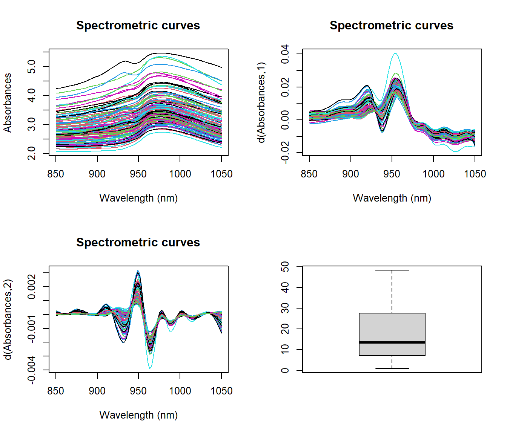
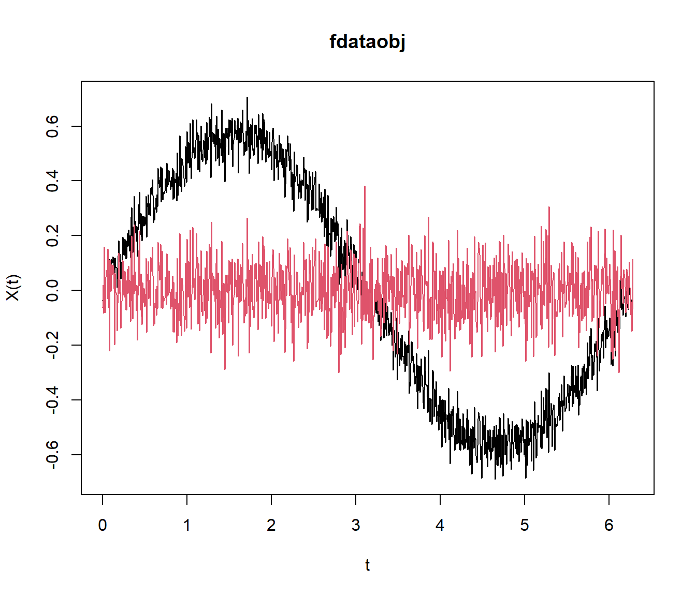
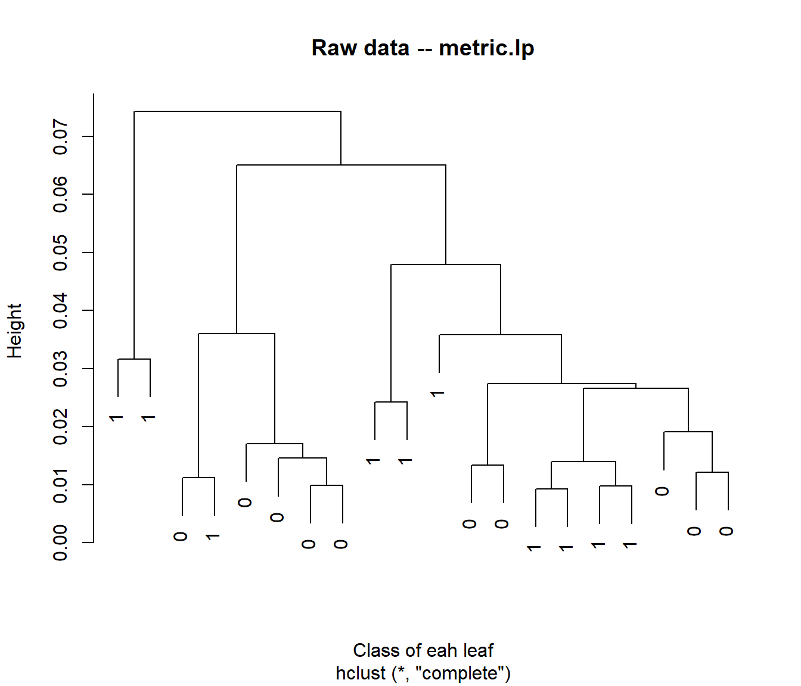
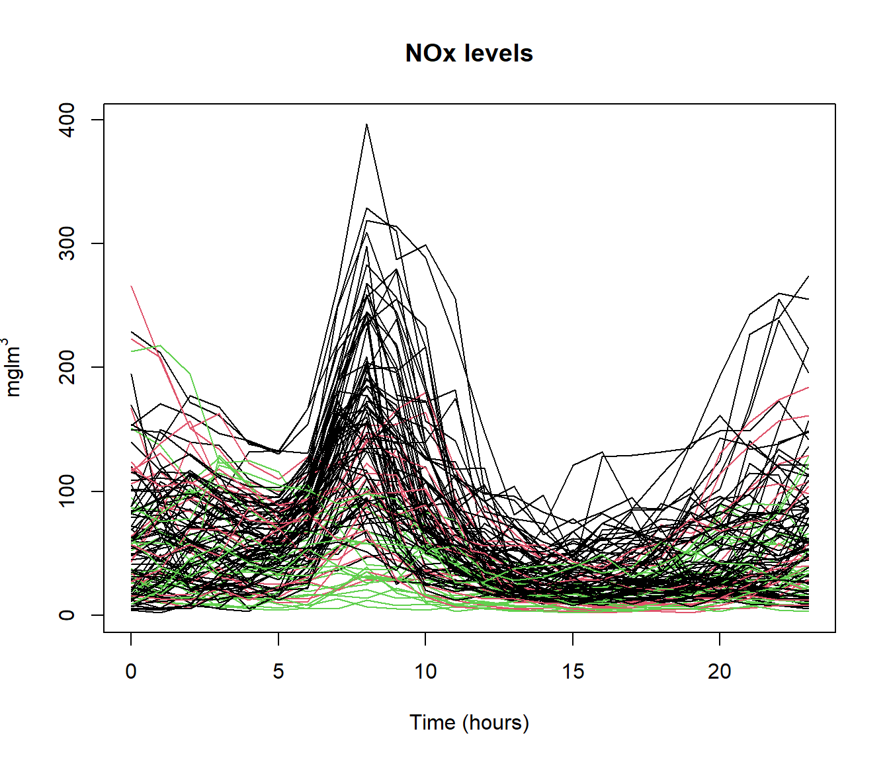

Chapter 2 Functional Regression Model
Regression models are those techniques for modeling and analyzing the relationship between a dependent variable and one or more independent variables. When one of the variables have a functional nature, we have functional regression models.
This section is devoted to all the functional regression models where the response variable is scalar and at least, there is one functional covariate.
For illustration, we will use the Tecator dataset to predict the fat contents from The explanatory variables to introduce in the models are:p The curves of absorbance \(X(t)\) as functional data or one of its two first derivatives (\(X.d1,X.d2\)) and/or Water content as real variable.
library(fda.usc)
data(tecator)
absorp<-tecator$absorp
ind<-sample(215,129) #ind = 1:129
tt = absorp[["argvals"]]
y = tecator[["y"]]$Fat[ind]
X = absorp[ind, ]
X.d1 = fdata.deriv(X, nbasis = 19, nderiv = 1)
X.d2 = fdata.deriv(X, nbasis = 19, nderiv = 2)
par(mfrow=c(2,2))
plot(X)
plot(X.d1)
plot(X.d2)
boxplot(y)
In the following sections, regression methods implemented –fda.usc– pacakge in the package are presented one by one and illustrated with examples for estimating the Fat content of the Tecator dataset.
2.1 Functional linear model (FLR) with basis representation
Supose that \(\mathcal{X} \in \mathcal{L}_{2}(T)\) and \(y \in \mathbb{R}\). Assume also that \(\mathbb{E}[\mathcal{X}(t)]=0, \forall t \in [0,T]\) and \(\mathbb{E}[y]=0\).
The FLM states that \[y= \left\langle \mathcal{X},\beta \right\rangle +\varepsilon=\int_{T}X(t)\beta(t)dt+\varepsilon\] where \(\beta \in \mathcal{L}_{2}(T)\) and \(\varepsilon\) is the errror term.
One way of estimating \(\beta\), it is representing the parametmer (and \(\mathcal{X}\)) in a \(\mathcal{L}_2\)-basis in the following way:
\[\beta(t)=\sum_k \beta_k \theta_k(t), \mathbf{X}(t)=\sum_k c_i \psi_k(t)\]
fregre.basis()fucntion uses fixed basis: B–spline, Fourier, etc. Ramsay and Silverman (2005b), Cardot, Ferraty, and Sarda (1999))
The next code illustrates how to estimate the fat contents using a sample of absorbances curves.
rangett <- X$rangeval
basis1 = create.bspline.basis(rangeval = rangett, nbasis = 17)
basis2 = create.bspline.basis(rangeval = rangett, nbasis = 7)
res.basis0 = fregre.basis(X, y, basis.x = basis1, basis.b = basis2)
res.basis1 = fregre.basis(X.d1, y, basis.x = basis1, basis.b = basis2)
res.basis2 = fregre.basis(X.d2, y, basis.x = basis1, basis.b = basis2)
res.basis0$r2;res.basis1$r2;res.basis2$r2## [1] 0.9385496## [1] 0.9360606## [1] 0.9518397summary(res.basis2)## *** Summary Functional Data Regression with representation in Basis ***
##
## Call:
## fregre.basis(fdataobj = X.d2, y = y, basis.x = basis1, basis.b = basis2)
##
## Residuals:
## Min 1Q Median 3Q Max
## -8.9498 -1.5962 -0.2428 1.8891 6.1841
##
## Coefficients:
## Estimate Std. Error t value Pr(>|t|)
## (Intercept) 1.759e+01 2.636e-01 66.723 < 2e-16 ***
## X.d2.bspl4.1 -1.294e+04 3.849e+03 -3.361 0.001040 **
## X.d2.bspl4.2 9.261e+03 2.901e+03 3.192 0.001801 **
## X.d2.bspl4.3 -1.215e+03 1.426e+03 -0.852 0.395973
## X.d2.bspl4.4 9.804e+02 1.092e+03 0.897 0.371275
## X.d2.bspl4.5 -1.599e+03 1.126e+03 -1.420 0.158232
## X.d2.bspl4.6 6.896e+03 1.802e+03 3.826 0.000207 ***
## X.d2.bspl4.7 -7.985e+03 1.438e+03 -5.554 1.69e-07 ***
## ---
## Signif. codes: 0 '***' 0.001 '**' 0.01 '*' 0.05 '.' 0.1 ' ' 1
##
## Residual standard error: 2.994 on 121 degrees of freedom
## Multiple R-squared: 0.9518, Adjusted R-squared: 0.9491
## F-statistic: 341.6 on 7 and 121 DF, p-value: < 2.2e-16
##
## -Names of possible atypical curves: No atypical curves
## -Names of possible influence curves: 140
par(mfrow=c(1,3))
plot(res.basis0$beta.est)## [1] "done"plot(res.basis1$beta.est)## [1] "done"plot(res.basis2$beta.est)
## [1] "done"The choice of the appropiate basis (and the number of basis elements) becomes now in a crucial step:
res.basis.cv = fregre.basis(X, y)
summary(res.basis.cv)## *** Summary Functional Data Regression with representation in Basis ***
##
## Call:
## fregre.basis(fdataobj = X, y = y)
##
## Residuals:
## Min 1Q Median 3Q Max
## -10.3657 -2.1421 -0.1094 2.1998 6.5177
##
## Coefficients:
## Estimate Std. Error t value Pr(>|t|)
## (Intercept) 17.5884 0.2757 63.790 <2e-16 ***
## X.bspl4.1 -200.0776 93.7095 -2.135 0.0348 *
## X.bspl4.2 242.9587 112.0151 2.169 0.0321 *
## X.bspl4.3 -133.6675 72.6212 -1.841 0.0682 .
## X.bspl4.4 23.7801 33.6901 0.706 0.4817
## X.bspl4.5 14.2783 19.4473 0.734 0.4643
## X.bspl4.6 -23.9989 16.8771 -1.422 0.1577
## X.bspl4.7 46.5994 27.9568 1.667 0.0982 .
## X.bspl4.8 -104.1480 65.9443 -1.579 0.1169
## X.bspl4.9 154.0717 108.4606 1.421 0.1581
## X.bspl4.10 -123.4221 94.1397 -1.311 0.1924
## ---
## Signif. codes: 0 '***' 0.001 '**' 0.01 '*' 0.05 '.' 0.1 ' ' 1
##
## Residual standard error: 3.132 on 118 degrees of freedom
## Multiple R-squared: 0.9486, Adjusted R-squared: 0.9443
## F-statistic: 217.8 on 10 and 118 DF, p-value: < 2.2e-16
##
## -Names of possible atypical curves: 43
## -Names of possible influence curves: 86 140 43 6
- Functional Principal Components (FPC).(Cardot, Ferraty, and Sarda 1999),
fregre.pc()
x<-X
basis.pc0 = create.pc.basis(X,1:3)
res.pc1 = fregre.pc(X, y, basis.x = basis.pc)
summary(res.pc1)## *** Summary Functional Data Regression with Principal Components ***
##
## Call:
## fregre.pc(fdataobj = X, y = y, basis.x = basis.pc)
##
## Residuals:
## Min 1Q Median 3Q Max
## -24.471 -4.389 0.886 5.328 14.585
##
## Coefficients:
## Estimate Std. Error t value Pr(>|t|)
## (Intercept) 17.58837 0.72555 24.241 <2e-16 ***
## PC1 0.99689 0.09838 10.133 <2e-16 ***
## PC2 -1.50819 1.18685 -1.271 0.206
## PC3 -21.84347 1.90208 -11.484 <2e-16 ***
## ---
## Signif. codes: 0 '***' 0.001 '**' 0.01 '*' 0.05 '.' 0.1 ' ' 1
##
## Residual standard error: 8.241 on 125 degrees of freedom
## Multiple R-squared: 0.6231, Adjusted R-squared: 0.614
## F-statistic: 68.88 on 3 and 125 DF, p-value: < 2.2e-16
##
##
## -With 3 Principal Components is explained 99.47 %
## of the variability of explicative variables.
##
## -Variability for each principal components -PC- (%):
## PC1 PC2 PC3
## 98.54 0.66 0.26
## -Names of possible atypical curves: No atypical curves
## -Names of possible influence curves: 18 185 99 140 44
res.pc2 = fregre.pc.cv(X, y)
summary(res.pc2)## Length Class Mode
## fregre.pc 19 fregre.fd list
## pc.opt 5 -none- numeric
## lambda.opt 1 -none- numeric
## PC.order 8 -none- numeric
## MSC.order 8 -none- numericpar(mfrow=c(1,2))
plot(res.pc1$beta.est)
plot(res.pc2[[1]]$beta.est)
2.2 FLM with functional and non functional covariates
\[E(y)=\alpha+\mathbf{Z}\beta+\sum_{q=1}^Q \left\langle \mathcal{X}^{q}(t),\beta_{q}(t)\right\rangle \]
where \(\left\{\mathcal{X}_q(t)\right\}_{q=1}^Q\) are function covariates and \(\mathbf{Z}=\left\{{Z_j}\right\}_{j=1}^J\) the non–functional covariates.
dataf = as.data.frame(tecator[["y"]][ind,]) # Fat, Protein, Water
basis.pc2 = create.pc.basis(X.d2,1:4)
basis.x = list(X = basis.pc0, X.d2 =basis.pc2)
f = Fat ~ X+X.d2
ldata = list(df = dataf, X=X,X.d2=X.d2)
res.lm1 = fregre.lm(f, ldata, basis.x = basis.x)
f = Fat ~ Water+X.d2
res.lm2 = fregre.lm(f, ldata, basis.x = basis.x)##
## Call:
## lm(formula = pf, data = XX, x = TRUE)
##
## Residuals:
## Min 1Q Median 3Q Max
## -9.9417 -1.6197 -0.2995 1.5864 9.4955
##
## Coefficients:
## Estimate Std. Error t value Pr(>|t|)
## (Intercept) 17.5884 0.2659 66.142 < 2e-16 ***
## X.PC1 0.1127 0.1023 1.102 0.27283
## X.PC2 7.1807 3.2173 2.232 0.02746 *
## X.PC3 -19.8307 6.9644 -2.847 0.00518 **
## X.d2.PC1 3066.6836 563.3407 5.444 2.78e-07 ***
## X.d2.PC2 5507.7858 2668.4922 2.064 0.04115 *
## X.d2.PC3 1879.3468 1017.4538 1.847 0.06717 .
## X.d2.PC4 -2644.9925 3131.4915 -0.845 0.39998
## ---
## Signif. codes: 0 '***' 0.001 '**' 0.01 '*' 0.05 '.' 0.1 ' ' 1
##
## Residual standard error: 3.02 on 121 degrees of freedom
## Multiple R-squared: 0.951, Adjusted R-squared: 0.9482
## F-statistic: 335.4 on 7 and 121 DF, p-value: < 2.2e-16
2.2.1 Predict method for functional regression model

2.3 Other procedures
- Other procedures
Partial Least Squares (FPLS).
fregre.pls(), Preda and Saporta (2005)Penalized versions and parameter selection:
fregre.pc.cv,fregre.basis.cv,fregre.np.cv(Febrero-Bande and Oviedo de la Fuente 2012)F-test for the FLM with scalar response:
flm.Ftest,F-test(Garcı́a-Portugués, González-Manteiga, and Febrero-Bande 2014)Goodness-of-fit test for the FLM with scalar response:
flm.test(Garcı́a-Portugués, González-Manteiga, and Febrero-Bande 2014)Measures of influence in FLM with scalar response:
influence.fdata,(Febrero-Bande, Galeano, and González-Manteiga 2010)Beta parameter estimation by wild or smoothed bootstrap procedure:
fregre.bootstrapFLM with a functional response:
fregre.basis.fr(Chiou et al. et al. 2004)
2.4 Non Linear Model (Frédéric Ferraty and Vieu 2006)
Supose \((\mathcal{X},Y)\) are a pair of r.v. with \(y\in \mathbb{R}\) where \(\mathbb{E}\) is a semi-metric space. To predict the resonse \(Y\) with \(\mathcal{X}\), the estimation is:
\[m(\mathcal{X})=\mathbb{E}(Y|X=\mathcal{X})\], where the NW estimator is given by:
\[\hat{m}(\mathcal{X})=\frac{\sum_{i=1}^n Y_i{ K(d(\mathcal{X},X_i)/h)}}{\sum_{i=1}^n {K(d(\mathcal{X},X_i)/h)}}\]
where K is an asymmetric kernel function and h is the bandwidth parameter.
2.5 Semi Linear Model (Aneiros-Pérez and Vieu 2006)
Let \((\mathcal{X},\mathbf{Z},y)\) with \(y\in \mathbb{R}\) (response), \(\mathcal{X}\in \mathbb{E}\) (functional) and \(\mathbf{Z} \in \mathbb{R}^p\) (MV covariates).
\[y = Z + m(X) + \varepsilon\]
Arguments for fregre.np() and fregre.plm() function
- –Ker–: type of asymmetric kernel function, by default asymmetric normal kernel (cosine, epanechnicov, quadratic,….).
- –metric–: type of metric or semimetric.
–type.S–: type of smoothing matrix \(\mathbf{S}\):
S.NW,S.LLR,S.KNN.
tecator<-list("df"=tecator$y,"absorp.fdata"=tecator$absorp.fdata)
X=tecator$absorp.fdata
y<-tecator$df$Fat
np<-fregre.np(X, y, metric = semimetric.deriv, nderiv = 1,type.S = S.KNN)Again, it has also implemented the function fregre.np.cv to estimate the smoothing parameter \(h\) by the validation criteria.
np<-fregre.np(X, y, metric = semimetric.deriv, nderiv = 1,type.S = S.KNN)
np.cv<-fregre.np.cv(X, y, metric = semimetric.deriv, nderiv = 1,type.S = S.KNN,h=c(3:9))
c(np$h.opt,np.cv$h.opt)## [1] 6 3c(np$r2,np.cv$r2)## [1] 0.8687145 0.94382202.6 Generalized Linear Models
One natural extension of LM model is the generalized functional linear regression model (GFLM) which allows various types of the response. In the GLM framework it is generally assumed that \(y_i|X_i\) can be chosen within the set of distributions belonging to the exponential family (Muller and Stadtmuller 2005).
In Generalized Functional Linear Model (FGLM), The scalar response \(y\)(belonging to a Exponential Family PDF) is estimated by functional \(\left\{\mathcal{X}_q(t)\right\}_{q=1}^Q\) and also non–functional \(\mathbf{Z}=\left\{{Z_j}\right\}_{j=1}^J\) covariates by:
\[E(y)=g^{-1}\left(\alpha+\mathbf{Z}\beta+\sum_{q=1}^Q \left\langle \mathcal{X}^{q}(t),\beta_{q}(t)\right\rangle\right) \] where \(g()\) is the inverse link function.
Example of logistic regression
In logistic regression, the probability, \(\pi_i\) , of the occurrence of an event, \(Y_i = 1\), rather than the event \(Y_i = 0\), conditional on a vector of covariates \(\mathcal{X}_i(t)\) is expressed as:
\[ p_i = \mathbb{P}[Y = 1|{X_i(t): t \in T }]=\frac{+exp\left\{\alpha+\int_{T}X_{i}(t)\beta(t)dt \right\}}{1+exp\left\{\alpha+\int_{T}X_{i}(t)\beta(t)dt \right\}}\ , i= 1,\ldots,n\]
with \(\epsilon\) are the independent errors with zero mean.
data(tecator)
names(tecator)[2]<-"df"
tecator$df$fat15<-ifelse(tecator$df$Fat<15,0,1)
tecator$absorp.d2=fdata.deriv(tecator$absorp.fdata,nderiv=2)
res.glm<-fregre.glm(fat15 ~ absorp.d2,data=tecator,family=binomial())
#summary(a)
yfit<-ifelse(res.glm$fitted.values<.5,0,1)
table(tecator$df$fat15,yfit)## yfit
## 0 1
## 0 109 3
## 1 2 1012.7 Generalized Functional Additive Model
- Generalized Functional Spectral Additive Linear Model (FGSAM), (Müller and Yao 2012)
\[E(y)=g^{-1}\left(\alpha+\sum_{j=1}^J f_{j}\left(\mathbf{Z}^{j}\right)+\sum_{q=1}^Q s_q\left(\mathcal{X}_{i}^{q}(t)\right)\right)\]
where \({f}(\cdot),{s}(\cdot)\) are the smoothed functions.
res.gsam<-fregre.gsam(fat15~ s(absorp.d2),data=tecator,family=binomial())
yfit<-ifelse(res.gsam$fitted<.5,0,1)
table(tecator$df$fat15,yfit)## yfit
## 0 1
## 0 112 0
## 1 0 103- Generalized Functional Kernel Additive Linear Model (FGKAM), (Febrero-Bande and González-Manteiga 2013)
\[E(y)=g^{-1}\left(\alpha+\sum_{q=1}^Q\mathcal{K}\left(\mathcal{X}^{q}_i(t)\right)\right)\] where \(\mathcal{K}(\cdot)\) is the kernel estimator.
# tecator2<-tecator[-1]
# tecator$df$fat15 <- as.factor(tecator$df$fat15)
# res.gkam<-fregre.gkam(fat15 ~ absorp.d2,data=tecator2, family=binomial(),
# control = list(maxit = 1))
# res.gkam
# yfit<-ifelse(res.gkam$fitted.values<.5,0,1)
# table(tecator$df$fat15,yfit)2.8 Functional GLS model
See Oviedo de la Fuente et al. (2018) for more details about the below algorithm:
A. Jointly estimation (nlme package): Minimize for \((\beta,\theta)\) the GLS criteria, i.e,
\[\Psi(\beta,\theta)=\left(y-\left\langle X,\beta \right\rangle\right)\Sigma(\theta)^{-1}\left(y-\left\langle X,\beta \right\rangle\right)\]
B. Iterative Estimation: In multivariate case, Zivot and Wang (2006) show that estimation of \(\beta\) by \(\hat{\beta}_{ML}\) is equivalent to the iterative estimation of \(\hat{\beta}\) recomputed at each iteration by the update estimator of \(\Sigma\).
Begin with a preliminary estimation of \(\hat{\theta}=\theta_0\). Compute \(\hat{W}=\Sigma(\theta_0)^{-1}\).
Estimate \({b}_\Sigma={(Z^\prime\hat{W}Z)^{-1}Z^\prime\hat{W}}y\)
Based on \(\hat{e}=({y-{Z}{b}_\Sigma})\), update \(\hat{\theta}=\rho({\hat{e}})\) where \(\rho\) depends on the dependence structure chosen.
Repeat steps 2 and 3 until convergence.
The generalized correlated cross-validation (GCCV) criterion is an extension to GCV within the context of correlated errors, Carmack, Spence, and Schucany (2012). It is defined as follows:
\[GCCV(K_x,K_\beta,\mathbf{b},\phi)=\frac{\sum_{i=1}^n \left(y_{i}-\hat{y}_{i,\mathbf{b}}\right)^2}{ \left({1-\frac{{tr}(\mathbf{G})}{n}}\right)^2} \]
where \({G}=2{H}\Sigma(\phi)-{H}\Sigma(\phi)H^\prime\) takes into account the effect of the dependence, the trace of \({G}\) is an estimation of the degrees of freedom consumed by the model and \({H}\) is the hat matrix.
The important advantage of this criterion is that it is rather easy to compute because it avoids the need to compute the inverse of the matrix \(\Sigma\). Even so, the complexity of the GLS criterion depends on the structure of \(\Sigma\) and it could sometimes be hard either to minimize or computationally expensive.
2.8.1 Dependent data example,
We use the fregre.gls() function that has the same arguments as the fregre.lm() function and: correlation argument, same functionality as in gls() and criteria argument, it require GCCV.S() function to calculate the GCCV score proposed by Carmack, Spence, and Schucany (2012).
data(tecator)
ts.plot(tecator[["y"]][,"Fat"])
cor(tecator[["y"]][,"Fat",drop=F],tecator[["y"]][,"Water",drop=F])## Water
## Fat -0.9881002cor(tecator[["y"]][,"Fat",drop=F],tecator[["y"]][,"Protein",drop=F])## Protein
## Fat -0.8608965dcor.xy(tecator[["y"]][,"Fat",drop=F],tecator[["y"]][,"Water",drop=F])##
## dcor t-test of independence
##
## data: D1 and D2
## T = 571.71, df = 22789, p-value < 2.2e-16
## sample estimates:
## Bias corrected dcor
## 0.9668619dcor.xy(tecator[["y"]][,"Fat",drop=F],tecator[["y"]][,"Protein",drop=F])##
## dcor t-test of independence
##
## data: D1 and D2
## T = 155.43, df = 22789, p-value < 2.2e-16
## sample estimates:
## Bias corrected dcor
## 0.7173448x.d2<-fdata.deriv(tecator[["absorp.fdata"]],nderiv=2)
ldata=list("df"=tecator[["y"]],"x.d2"=x.d2)
res.gls=fregre.gls(Fat~x.d2, data=ldata, correlation=corAR1())
coef(res.gls[["modelStruct"]],F)## corStruct.Phi
## 0.4942661The previous model is restricted to a structure determined by gls() function of nlme The function fregre.igls() is presented as an alternative because it allows any type of dependence structures designed by the user.
The code bellow shows a simple use of iterative scheme (iGLS). In particular, we use a iGLS-AR(\(p=1\)) scheme for error estimation.
res.igls=fregre.igls(Fat~x.d2, data=ldata, correlation=list("cor.ARMA"=list()),control=list("p"=1))
coef(res.igls[["corStruct"]][[1]])## ar1
## 0.488854res.igls##
## Call:
## list("fregre.basis")
##
## Coefficients:
## (Intercept) x.d2.bspl4.1 x.d2.bspl4.2 x.d2.bspl4.3 x.d2.bspl4.4
## 18.12 -608.20 6203.09 -8252.76 6271.43
## x.d2.bspl4.5
## -7156.85res.igls$corStruct## $ar
##
## Call:
## arima(x = x, order = c(p, d, q), include.mean = FALSE, transform.pars = TRUE)
##
## Coefficients:
## ar1
## 0.4889
## s.e. 0.0600
##
## sigma^2 estimated as 8.076: log likelihood = -529.76, aic = 1063.53Both examples estimate an AR(1) with \(\phi=0.49\). Thus, the estimation and the prediction made with these models will be more accurate than the classical functional models in which it is assumed that the errors are independent.
2.8.2 Functional Response Model
Reference papers: Faraway (1997), Frédéric Ferraty, Van Keilegom, and Vieu (2012)
R expample of function fregre.basis.fr()
data(aemet)
log10precfdata<-aemet$logprec; tempfdata<-aemet$temp
res2<-fregre.basis.fr(tempfdata,log10precfdata)
i<-1
plot(log10precfdata[i],lty=1,main=paste0("Weather station, ",i))
lines(res2$fitted.values[i],lty=2,lwd=2,col=4)
2.8.3 Other Models:
- Functional Quantile Regession Model, see Kato et al. (2012), Cardot, Crambes, and Sarda (2005).
- Functional Single Index Model, see Frédéric Ferraty, Park, and Vieu (2011).
- Functional Projection Pursuit Regression Model, see Frédéric Ferraty et al. (2013).
- Functional Machine Learning methods (SVM, RPART, NNET, random Forest)